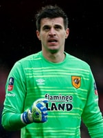
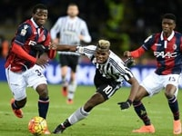

Чемпионат Германии, 22-й тур 17:30. Байер - Боруссия Д - 0:0 Анонс Чемпионат Испании, 25-й тур 18:00. Малага - Реал Мадрид - 0:0 Онлаин 20:15. Гранада - Валенсия - 0:0 Анонс 22:30. Атлетико - Вильярреал - 0:0 Анонс Кубок Англии, 1/8 финала 19:00. Челси - Манчестер Сити - 0:0 Онлаин Чемпионат Италии, 26-й тур 22:45. Рома - Палермо - 0:0 Анонс
Чемпионат Испании. 25-й тур
20 февраля. Лас-Пальмас. Стадион "Гран-Канария"
ЛАС-ПАЛЬМАС - БАРСЕЛОНА - 1:2
Голы: Суарес, 6 (0:1). Жозе Виллиан, 10 (1:1). Неймар, 39 (1:2)
«Барселона» не без труда справилась с «Лас-Пальмасом». Бывает так, что с аутсайдером сложнее играть, нежели с тем, кто идет в лидирующей группе клубов.Каталонцы дважды вели в счете по ходу встречи, выстояли. Моменты у конкурента были и часто приезжим просто везло. У хозяев же поля отлично действовал голкипер, который не позволил оппоненту увеличить преимущество. Подопечные Луиса Энрике могли легко оступиться, но на классе выстояли. Суаресу надо работать над реализацией, Неймару не сбавлять оборотов, а Месси не расслабляться в играх с такими соперниками. Понятно, что в Лиге чемпионов они выступят в другом свете, но надо ведь и в Примере как-то радовать болельщиков. Хотя, что и говорить, результат есть, три очка есть, удовлетворение от всего произошедшего тоже. Каталонцы продолжают свою серию, не проигрывают 18 туров. И, наверное, это далеко не предел. «Лас-Пальмас» же остается среди аутсайдеров, вроде и неплохо играет клуб, но дела у них все хуже, ведь до конца чемпионата остается не так много времени. Однако в отличие от других форсирующих на грани вылета и прибывающих в самой яме, эти ребята вполне способны еще побороться за свое место под солнцем, дабы остаться в Примере... InfПодробнее
Чемпионат Германии. 22-й тур
20 февраля. Мюнхен. Стадион "Альянц Арена"
БАВАРИЯ - ДАРМШТАДТ - 3:1
Голы: Вагнер, 26 (0:1). Мюллер, 49 (1:1). Мюллер, 71 (2:1). Левандовски, 84 (3:1)
Неубедительный матч провела «Бавария». Перед началом встречи многие предсказывали, что мюнхенцы разнесут в пух и прах «Дармштадт» на своем поле. Во-первых, из-за огромной разницы в классе между соперника. Во-вторых, по причине отсутствия в составе «лилий» сразу пятерых футболистов основной обоймы, решивших коллективно заработать желтые карточки в поединке против «Байера» образца недельной давности и пропустить встречу в Мюнхене по причине дисквалификаций. Несмотря на существенные кадровые проблемы, новичок Бундеслиги смотрелся достойно на «Альянц Арене» и заставил хозяев попотеть. Более того, подопечным Дирка Шустера удалось даже первый тайм выиграть. На его экваторе гостей вперед вывел Сандро Вагнер. Причем, в эпизоде с взятием ворот Нойера не лучшим образом проявил себя Сердар Таски. Проводивший дебютный матч за «Баварию» защитник проиграл позицию форварду «Дармштадта» и спокойно позволил ему нанести удар с близкого расстояния. Сердар, это Бундеслига. Тут нельзя терять концентрацию ни на секунду. Защитник, права на которого до сих пор принадлежат московскому «Спартаку», провел на поле пятьдесят с копейками минут и вряд ли получит высокую оценку за свои... Подробная инфаПодробнее
Кубок Англии. 1/8 финала
20 февраля. Лондон. Стадион "Эмирейтс"
АРСЕНАЛ - ХАЛЛ СИТИ - 0:0
Голы: Вагнер, 26 (0:1). Мюллер, 49 (1:1). Мюллер, 71 (2:1). Левандовски, 84 (3:1)
Элдин Якупович. С ним ассоциируется все, что угодно, особенно в свете давних его приключений в стане московского «Локомотива». Многие не понимали, зачем он вообще в клубе. И вот вам ответ, пусть спустя столько лет. Мастера из лондонского «Арсенала» ничего не смогли поделать на своем поле. Пробить этого кипера сегодня не смогли бы и Месси с Роналду, причем в паре, в нападении. Швейцарец был феноменален. «Халл Сити» устоял, благодаря ему, на «Эмирейтс» и теперь подопечные Брюса примут клуб Венгера на своем «Кей Си». Вот там все будут шансы у «Халла», чтобы обыграть, наконец, «канониров» в рамках данного турнира. Лишний поединок в календаре у обеих сторон, разумеется, но каким же он будет увлекательным. И ведь нельзя тут выделить фаворита. Это Англия, тут и у «пушкарей» могут пушки не выстрелить, да и соперник из дивизиона пониже может удивить. Ну а что до Якуповича… еще одна такая игра и в АПЛ на него как минимум половина участников лиги обратит внимание, уж очень он сыграл здорово... Кубок Англии удивительный турнир. В нем сражаются все, до последнего, очень много сенсаций... Подробная инфаПодробнее
Чемпионат Италии. 26-й тур
19 февраля. Болонья. Стадион "Ренато Даль`Ара"
БОЛОНЬЯ - ЮВЕНТУС - 0:0
Голы: Вагнер, 26 (0:1). Мюллер, 49 (1:1). Мюллер, 71 (2:1). Левандовски, 84 (3:1)
Рано или поздно фантастическая победная серия "Ювентуса" должна была прерваться, но случилось это в совсем не подходящий для туринцев момент. Только-только выйдя на первое место после успеха в поединке с "Наполи", "Старая синьора" рискует вновь отдать лидерство неаполитанцам. "Ювентус" оступился прямо перед лигочемпионским матчем с "Баварией", что может слегка подточить уверенность команды Массимилиано Аллегри в своих силах. Дело даже не в итоговом счёте, а в самой игре гостей. "Ювентус" смотрелся в Болонье непривычно бледно в атаке и каких-то стопроцентных моментов так создать и не сумел. Разумеется, частично это объясняется отсутствием в основе Пауло Дибалы, Хуана Куадрадо и Сами Хедиры. Немец так и вовсе не попал в заявку на матч, а вот первые двое на поле после перерыва появились. Однако в роли спасителей выступить не смогли. Скорее, таковым мог стать Поль Погба, но у него мяч в ворота не шёл. "Болонья" же провела весь матч очень грамотно - в открытую хозяева разумно играть с чемпионом не стали, а в мобильности ему не уступили. Более того, "красно-синие" огрызались порой очень опасно. В итоге встреча завершилась вполне закономерной ничьей. Победная серия "Ювентуса" прервалась... Подробная инфаПодробнее